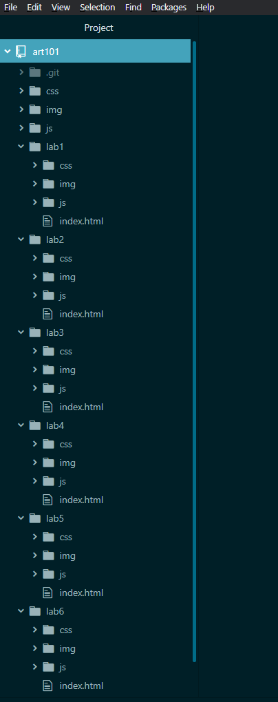
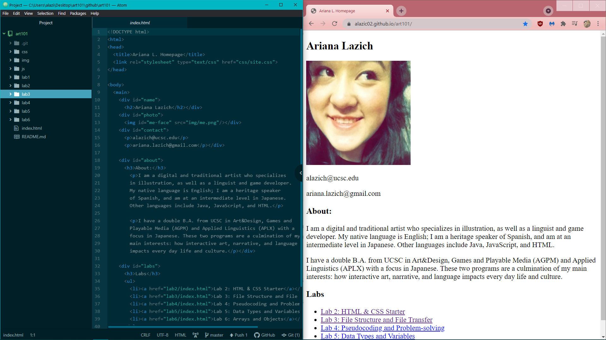
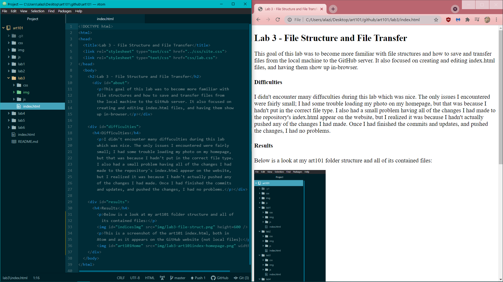

This goal of this lab was to become more familiar with file structures and how to save and transfer files from the local machine to the GitHub server. It also focused on creating and editing index.html files, and having them show up in-browser.
I didn't encounter many diffuculties during this lab which was nice. The only issues I encountered were fairly small; I had some trouble loading my photo on my homepage, but that was because I hadn't put in the correct file type. I also had a small problem making all of the changes I had made to the repository's index.html appear on the website, but I realized it was because I hadn't actually pushed any of the changes I had made. Once I had finished the commits and updates, and pushed the changes, I had no problems.
Below is a look at my art101 folder structure and all of its contained files:
This is a screenshot of the art101 index.html, both in Atom and as it appears on my GitHub website (not local files):
Here is a screenshot of the lab3 index.html as it appears in Atom, and how it appears in-browser when showing the local file:
